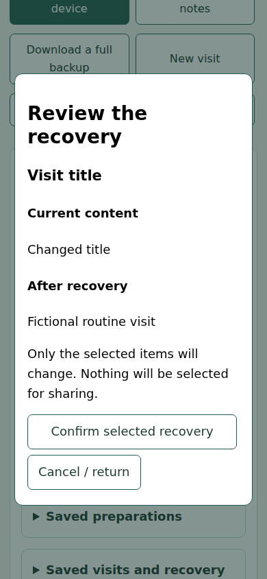

01 / 12 · The decision
Make mistakes easier to repair
Extend My Visit Notes with deliberate recovery of removed items, earlier wording and unwanted additions. Keep the work focused on the notes people already create. Do not add accounts, automatic sending or medical advice.
Speaker notes
This is a product decision based on a known software gap. It is not evidence that this is the most important problem for any diagnostic group.
02 / 12 · The gap
Confirmation helps before a mistake, not after it
The previous release asked before important deletions but could not undo them afterward. Saving unfinished preparation solved a different problem: returning to work later. Recovery addresses mistakes made while that work is changing.
Speaker notes
Separate the observed product limitation from assumptions about how often people need recovery. We have not measured frequency or willingness to use it.
03 / 12 · A complete example
Recover one question, keep the newer work
A fictional person removes an answered question by mistake. They later rename the visit and add another note. In Fix a mistake they choose the removed question, inspect its complete contents and restore it. The new title and other note stay.
Speaker notes
The unit of recovery matters. Restoring an entire earlier visit would be simpler to build, but would replace unrelated work.
04 / 12 · The working product
Review before changing anything
The recovery area lists recorded changes. A person selects individual items, reviews current and proposed content, then confirms or cancels. A warning calls out content edited since the original record. Nothing is selected for sharing because of recovery.

Speaker notes
Show the actual recovery preview below. This is fictional content from a browser check, not a participant session.
05 / 12 · Unwanted additions
Undo the parts that do not belong
Passages added together can be reviewed together, but removed individually. Later edits to a selected question or next step appear in the preview. Unselected items stay. A private passage can be removed while keeping later private notes when the original wording can be identified safely.
Speaker notes
If private wording was edited or appears more than once, the app must not guess. It explains the limit and asks the person to edit the private note directly.
06 / 12 · Saved preparation
Keep the same storage boundaries
Some completed visit results exist only inside saved preparation. Recovery can change that retained result without separately saving a visit. Its completion record stays, so returning does not apply the original passages again. The interface explains which copy is changing.
Speaker notes
A saved visit, an open draft and a result retained inside preparation can be separate copies. Do not hide this distinction behind a generic success message.
07 / 12 · Privacy
Recovery means keeping an earlier copy
Records can contain private notes and removed content. Keep at most the latest 100 changes for up to seven days. Expired records are unavailable; stored expired copies are cleaned on the next successful write because the app cannot run while closed. Offer erase-now controls.
Speaker notes
Retention is a tradeoff, not a free benefit. A maximum count can remove old records before seven days. Device storage failures must be reported rather than hidden.
08 / 12 · Deletion
Make the choices genuinely different
Remove to recovery keeps a recoverable saved copy within the limits. Delete permanently removes that saved item and its recovery records now. Erase recovery records keeps current notes. Downloaded files and copies in other preparations remain outside that action.
Speaker notes
Do not claim secure forensic erasure. These controls govern this app’s stored copies, not browser backups, files, clipboard content or another device.
09 / 12 · Backup and sharing
Do not spread old private text
Visit backups contain current visits. Library backups contain current saved visits and reusable requests. Preparation backups contain current preparation. None includes recovery history. Recover needed content before making a backup. Shared summaries never include recovery records.
Speaker notes
This keeps backup formats narrow and predictable. A backup is not a complete recovery-history archive, and the interface must say so.
10 / 12 · Engineering evidence
Test the result and the failure paths
16 of 16 recovery browser checks passed in the recorded run. The model report contains 100 passing checks. The release also requires all existing suites and an extracted-package check. See the recorded evidence below.
- RC-01 — Saved question removal, offline recovery and retained result: passed
- RC-02 — Earlier wording preview and cancellation: passed
- RC-03 — Recoverable visit removal and permanent erasure stay distinct: passed
- RC-04 — Temporary batch history survives first save and removes only selected additions: passed
- RC-05 — Kept preparation result recovery and removal preserve completion: passed
- RC-06 — Recovery failure and another tab leave saved notes intact: passed
- RC-07 — Earlier private wording stays out of backups and summaries; erase removes recovery copies: passed
- RC-08 — Cancelling a locked recovery prevents delayed application: passed
- RC-09 — Expired records cannot be recovered and are pruned on a successful write: passed
- RC-10 — Full browser restart offline retains recovery before and after use: passed
- RC-11 — Private batch undo keeps newer wording; keyboard controls fit narrow screen: passed
- RC-12 — Next-step recovery retains date contact and state without replacing newer title: passed
- RC-13 — Failed first save retries with history; failed later edits cannot be overwritten by recovery: passed
- RC-14 — Library and preparation backups exclude history; permanent preparation deletion clears its history: passed
- RC-15 — Double confirmation does not duplicate; closing a queued recovery leaves saved state unchanged: passed
- RC-16 — Saved-target batch refuses ambiguous private undo but still recovers other selected additions: passed
Recorded 2026-09-16T21:53:36.643Z. Browser results · Model results · Current release status
Speaker notes
Test counts alone are not coverage. Inspect the named scenarios, source hashes and requirement-level audit before approving a release.
11 / 12 · What remains unknown
Working software is not proof of benefit
The checks use fictional notes. They do not establish preference, reduced stress, clinical benefit, screen-reader usability or physical-phone reliability. Those claims would require separate evidence. No participants are required to complete this engineering goal.
Speaker notes
Do not turn a lack of participant evidence into an invented testimonial. Say exactly what has and has not been checked.
12 / 12 · Delivery and decision gate
Ship only when the whole journey holds
Deliver the working app, detailed requirements, fictional walkthroughs, this presentation, a requirement-level acceptance map and a tested archive. Approve only after recovery, permanent deletion, privacy, offline use, restart and failed-write behaviour are checked against current files.
Speaker notes
The full scope is recovery of mistakes, not merely a history list. The release decision must reflect missing evidence as unfinished work.